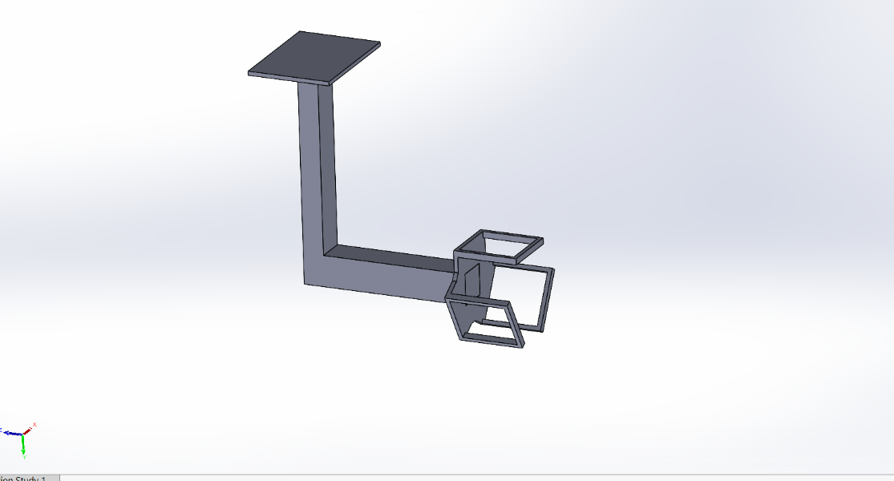
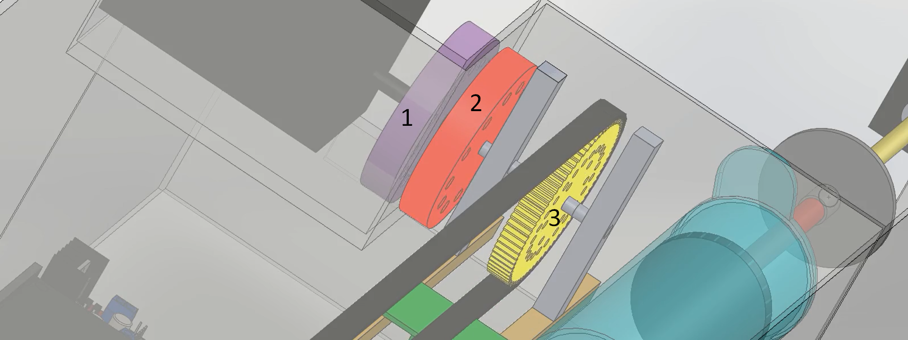

Soft Robotic Gripper for Underwater Body Retrieval
Design and prototype of a retrieval system for "Dorus", an autonomous fire-service rescue boat: a silicone soft gripper, protective capsule and magnetic drive recover a body from the bottom of a lake without damage.
Background & Motivation
In 2020 alone, 107 people drowned in the Netherlands. When someone cannot be rescued in time, their body has to be recovered from the water - often by experienced divers, which is slow, dangerous, and takes a heavy emotional toll. Commissioned by the Mechatronics research group at Saxion, this project explored a mechatronic alternative: a retrieval unit for "Dorus", an autonomous fire-service rescue boat prototype, that picks a body up from the lake bed and brings it to the surface.

Full retrieval assembly

Gripper holder & box

Magnetic coupling
Assignment & Key Requirements
The goal was to design and test a prototype retrieval system that recovers a submerged body and lifts it to the surface without damage, so relatives can say a dignified goodbye and an autopsy remains possible. Key requirements:
- The system must be waterproof and must not capsize the boat.
- It must avoid obstacles and measure the distance to the lake bed to avoid collisions.
- It must grasp the body without harming it and not release it until commanded.
- A pressure sensor must detect contact from at least 4.5 N.
Approach
We structured the project around the V-model. From the requirements we defined the functions, built a morphological overview, and combined the possible solutions into three concepts. These were scored against four weighted criteria - functionality (30%), feasibility (35%), sustainability (20%) and price (15%) - to select the best design, then detailed across the mechanical, electrical, electronic and software domains.
The Concept
To satisfy the "do not damage the body" requirement, the core of the concept is a soft gripper cast from a two-component silicone (Ecoflex) in custom 3D-printed molds. Air pumped into its channels by a syringe (driven by a DC motor and spindle) makes the soft fingers curl closed and open. The gripper and its box protect the body and shield it from bystanders, with the electronics in a sealed compartment behind plexiglass. To keep the drive waterproof, linear motion is transferred through the plexiglass with a magnetic coupling: a stepper motor turns a disc of magnets that drives a matching disc on the other side, connected through a gear and timing belt to the moving gripper holder. Ultrasonic sensors sense the surroundings and detect the body, and a pressure sensor in the gripper confirms contact.
Testing & Results
Seven tests were derived from the requirements. Because of the COVID-19 lockdown the prototype could not be fully assembled, so some values were estimated and a simulation was made to compensate. The main results:
- Waterproofing - passed (watertight over 10 runs of 5 minutes at 1 m depth).
- Environment & body detection (ultrasonic) - passed.
- Gripper overshoot after contact - failed; the holder slid more than the allowed 1 cm.
- No damage to the object - passed.
- 90° tilt within 15 s - passed on average.
- Pressure sensor at 4.5 N - failed; the sensor did not always trigger at the threshold.
Conclusions & Recommendations
The retrieval system is a promising concept but not yet complete: it needs tuning so the gripper does not overshoot, and the pressure-sensor sensitivity should be handled in software. The soft gripper and protective box are strong features, and ultrasonic sensing works well underwater. For future work I recommended exploring different soft grippers, replacing the large hinge with a robot arm for more precise positioning, optimising the magnetic coupling, and using ferrofluid to seal the stepper motor. Overall the concept offers a solid basis for a system that lets fewer divers risk their lives.